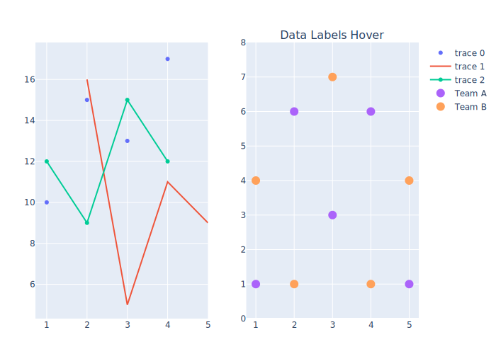
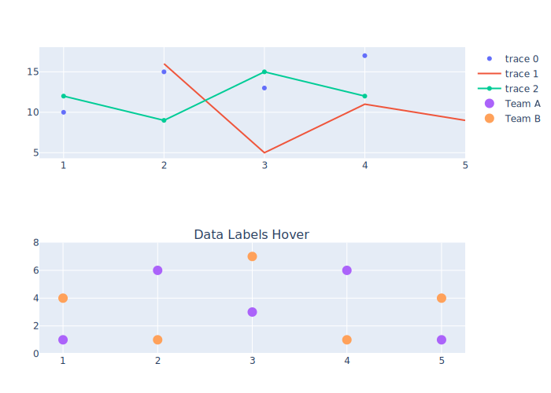
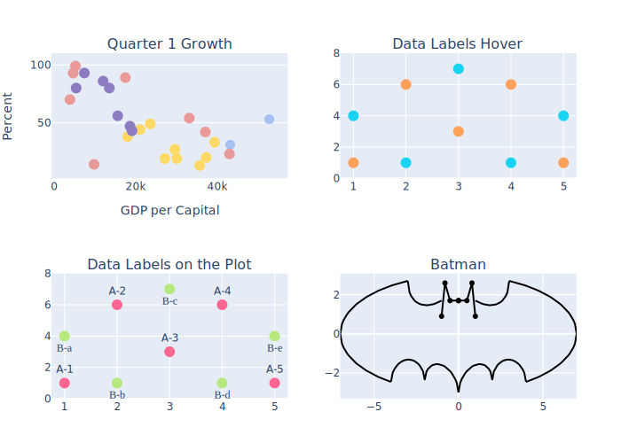
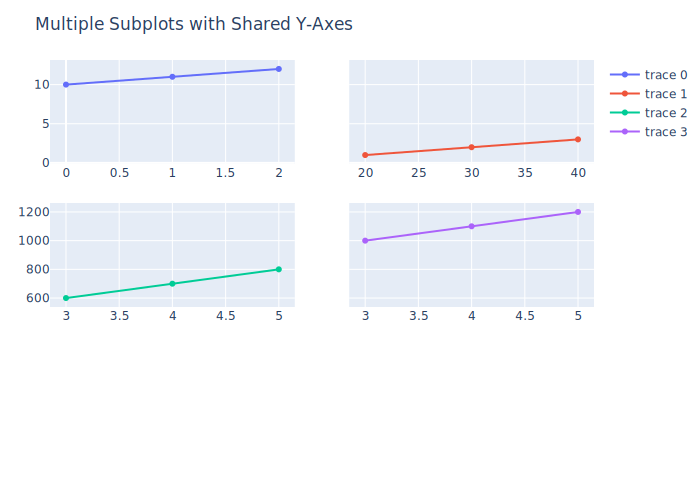
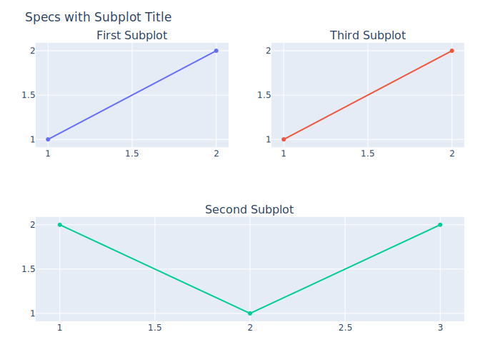
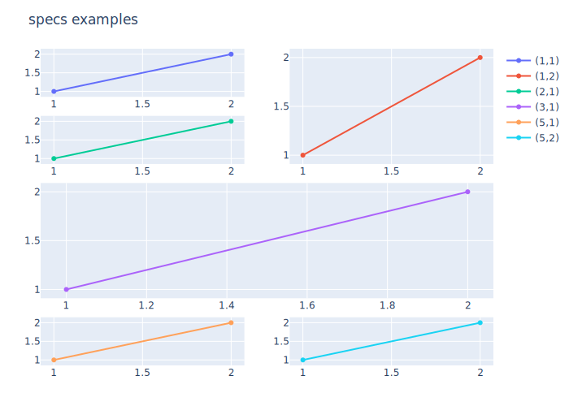

using PlotlyJS, Dates
include("../../../examples/line_scatter.jl")
errorbars2 (generic function with 1 method)
function subplots1()
p1 = linescatter1()
p2 = linescatter2()
p = [p1 p2]
p
end
subplots1()
function subplots2()
p1 = linescatter1()
p2 = linescatter2()
p = [p1; p2]
p
end
subplots2()
function subplots3()
p1 = linescatter6()
p2 = linescatter2()
p3 = linescatter3()
p4 = batman()
p = [p1 p2; p3 p4]
p.plot.layout["showlegend"] = false
p.plot.layout["width"] = 1000
p.plot.layout["height"] = 600
p
end
subplots3()
function subplots_withcomprehension()
hcat([plot(scatter(x=1:5, y=rand(5))) for i in 1:3]...)
end
subplots_withcomprehension()

function subplots_withsharedaxes()
data = [
scatter(x=1:3, y=2:4),
scatter(x=20:10:40, y=fill(5, 3), xaxis="x2", yaxis="y"),
scatter(x=2:4, y=600:100:800, xaxis="x", yaxis="y3"),
scatter(x=4000:1000:6000, y=7000:1000:9000, xaxis="x4", yaxis="y4")
]
layout = Layout(
xaxis_domain=[0, 0.45],
yaxis_domain=[0, 0.45],
xaxis4=attr(domain=[0.55, 1.0], anchor="y4"),
xaxis2_domain=[0.55, 1],
yaxis3_domain=[0.55, 1],
yaxis4=attr(domain=[0.55, 1], anchor="x4")
)
plot(data, layout)
end
subplots_withsharedaxes()
function with_make_subplots1()
# The `shared_xaxes` argument to `make_subplots` can be used to link the x
# axes of subplots in the resulting figure. The `vertical_spacing` argument
# is used to control the vertical spacing between rows in the subplot grid.
# Here is an example that creates a figure with 3 vertically stacked
# subplots with linked x axes. A small vertical spacing value is used to
# reduce the spacing between subplot rows.
p = make_subplots(rows=3, cols=1, shared_xaxes=true, vertical_spacing=0.02)
add_trace!(p, scatter(x=0:2, y=10:12), row=3, col=1)
add_trace!(p, scatter(x=2:4, y=100:10:120), row=2, col=1)
add_trace!(p, scatter(x=3:5, y=1000:100:1200), row=1, col=1)
relayout!(p, title_text="Stacked Subplots with Shared X-Axes")
p
end
with_make_subplots1()
function with_make_subplots2()
# The `shared_yaxes` argument to `make_subplots` can be used to link the y
# axes of subplots in the resulting figure.
# Here is an example that creates a figure with a 2 x 2 subplot grid, where
# the y axes of each row are linked.
p = make_subplots(rows=3, cols=2, shared_yaxes=true)
add_trace!(p, scatter(x=0:2, y=10:12), row=1, col=1)
add_trace!(p, scatter(x=20:10:40, y=1:3), row=1, col=2)
add_trace!(p, scatter(x=3:5, y=600:100:800), row=2, col=1)
add_trace!(p, scatter(x=3:5, y=1000:100:1200), row=2, col=2)
relayout!(p, title_text="Multiple Subplots with Shared Y-Axes")
p
end
with_make_subplots2()
function with_make_subplots3()
# The `specs` argument to `make_subplots` is used to configure per-subplot
# options. `specs` must be a `Matrix` with dimensions that match those
# provided as the `rows` and `cols` arguments. The elements of `specs` may
# either be `missing`, indicating no subplot should be initialized starting
# with this grid cell, or an instance of `Spec` containing subplot options.
# The `colspan` subplot option specifies the number of grid columns that the
# subplot starting in the given cell should occupy. If unspecified,
# `colspan` defaults to 1.
# Here is an example that creates a 2 by 2 subplot grid containing 3
# subplots. The subplot `specs` element for position (2, 1) has a `colspan`
# value of 2, causing it to span the full figure width. The subplot `specs`
# element f or position (2, 2) is `None` because no subplot begins at this
# location in the grid.
p = make_subplots(
rows=2, cols=2,
specs=[Spec() Spec(); Spec(colspan=2) missing],
subplot_titles=["First Subplot" "Second Subplot"; "Third Subplot" missing]
)
add_trace!(p, scatter(x=[1, 2], y=[1, 2]), row=1, col=1)
add_trace!(p, scatter(x=[1, 2], y=[1, 2]), row=1, col=2)
add_trace!(p, scatter(x=[1, 2, 3], y=[2, 1, 2]), row=2, col=1)
relayout!(p, showlegend=false, title_text="Specs with Subplot Title")
p
end
with_make_subplots3()
function with_make_subplots4()
# Here is an example that uses the `rowspan` and `colspan` subplot options
# to create a custom subplot layout with subplots of mixed sizes.
p = make_subplots(
rows=5, cols=2,
specs=[Spec() Spec(rowspan=2)
Spec() missing
Spec(rowspan=2, colspan=2) missing
missing missing
Spec() Spec()]
)
add_trace!(p, scatter(x=[1, 2], y=[1, 2], name="(1,1)"), row=1, col=1)
add_trace!(p, scatter(x=[1, 2], y=[1, 2], name="(1,2)"), row=1, col=2)
add_trace!(p, scatter(x=[1, 2], y=[1, 2], name="(2,1)"), row=2, col=1)
add_trace!(p, scatter(x=[1, 2], y=[1, 2], name="(3,1)"), row=3, col=1)
add_trace!(p, scatter(x=[1, 2], y=[1, 2], name="(5,1)"), row=5, col=1)
add_trace!(p, scatter(x=[1, 2], y=[1, 2], name="(5,2)"), row=5, col=2)
relayout!(p, height=600, width=600, title_text="specs examples")
p
end
with_make_subplots4()
